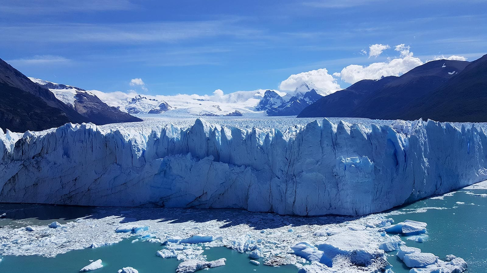
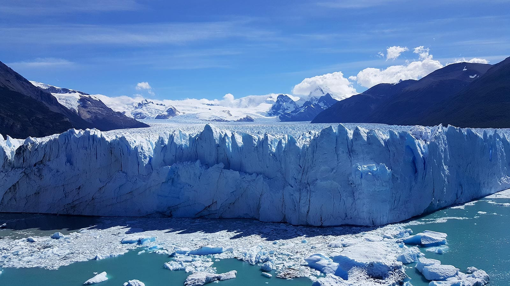
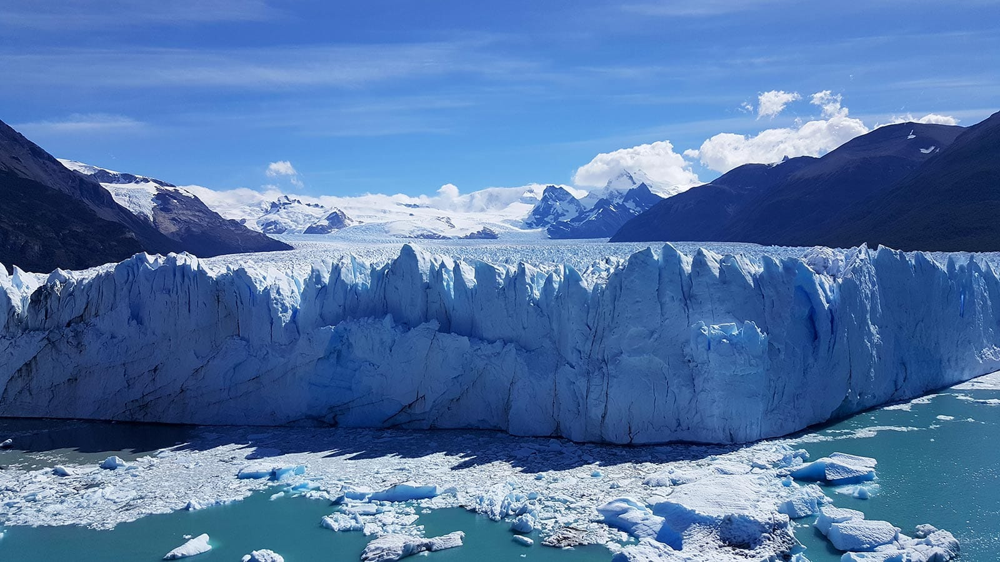
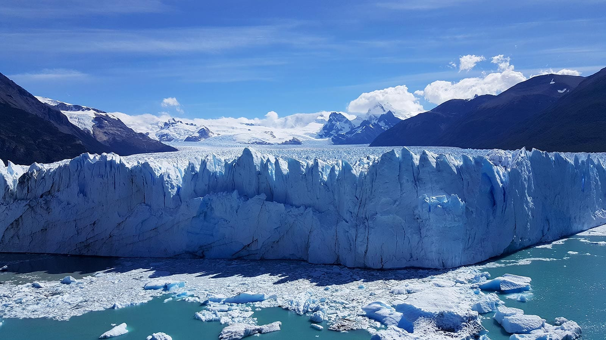

 

Descubre la belleza de nuestros destinos a través de una selección cautivadora de
imágenes y
videos de paisajes impresionantes. Sumérgete en la majestuosidad de montañas escarpadas que tocan el
cielo,
extensas playas bañadas por aguas cristalinas y exuberantes bosques que te invitan a explorar. Nuestra
colección de imágenes y videos te transportará a lugares de ensueño, despertando tus sentidos y
alimentando
tu espíritu aventurero.
Déjate maravillar por la imponente grandeza de las montañas, donde la nieve eterna cubre las cumbres y
los
valles ocultan lagos de aguas turquesas. Observa cómo el sol se pone en el horizonte, tiñendo el cielo
de
colores intensos y creando un espectáculo que te dejará sin aliento. Adéntrate en bosques frondosos y
sumérgete en la serenidad de la naturaleza, mientras los rayos del sol se filtran entre las copas de los
árboles.
Explora nuestras imágenes y videos de playas paradisíacas, donde la arena suave se funde con las olas
que
acarician la costa. Contempla la vastedad del océano que se extiende hasta donde alcanza la vista y
sumérgete en sus aguas cristalinas para descubrir un mundo submarino lleno de vida y colores vibrantes.
Siente la brisa marina acariciando tu rostro y déjate llevar por la tranquilidad que solo el mar puede
ofrecer.
Nuestra colección de imágenes y videos captura la esencia de cada destino, desde panorámicas panorámicas
hasta primeros planos llenos de detalles. Cada imagen y video es una invitación a explorar, a sumergirte
en
la magia de la naturaleza y a descubrir lugares que te dejarán maravillado.
Permítenos transportarte a través de estas imágenes y videos a destinos que te inspirarán a planificar
tu
próxima aventura. Sumérgete en la belleza de los paisajes y deja que tu imaginación te lleve a lugares
extraordinarios. ¡Prepárate para vivir experiencias inolvidables y crear recuerdos que perdurarán para
siempre!